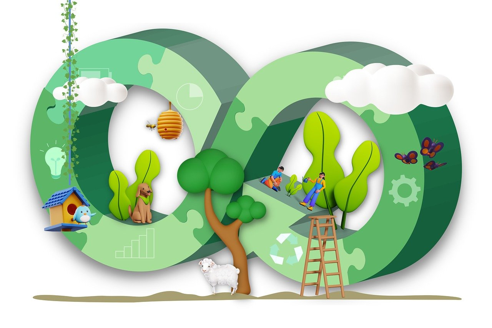
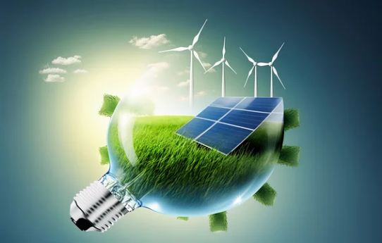

RENEWABLE ENERGY
About renewable energy
Renewable energy is energy derived from natural sources that
replenish themselves over time, such as sunlight, wind, water,
geothermal heat, and biomass. Unlike fossil fuels, renewable
energy sources do not deplete when used, and they produce
minimal greenhouse gas emissions, making them environmentally
friendly. Solar energy, for instance, captures the sun's energy
through photovoltaic cells in solar panels, converting it into
electricity. This form of renewable energy has grown in
popularity due to its versatility, with applications ranging
from small-scale home systems to large solar farms. Similarly,
wind energy uses the kinetic energy of moving air to generate
electricity through wind turbines, which can be located onshore
or offshore. Wind energy is one of the fastest-growing renewable energy sources,
owing to its high energy output and relatively low environmental impact.